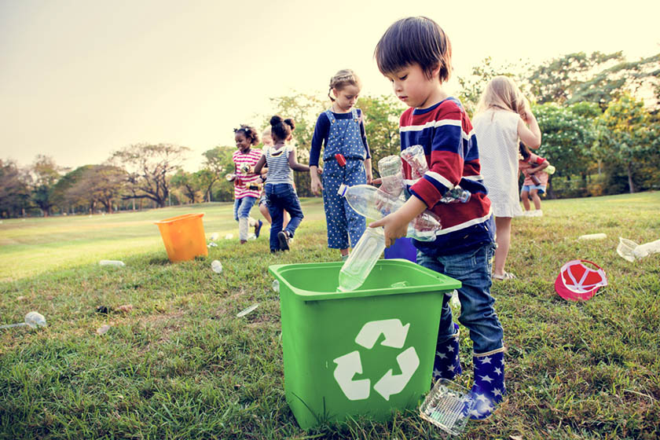
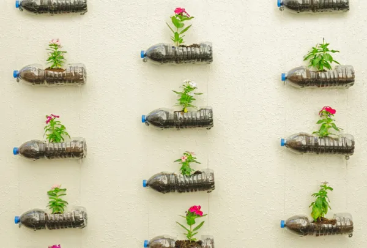
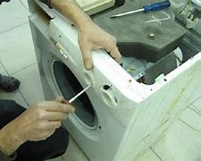
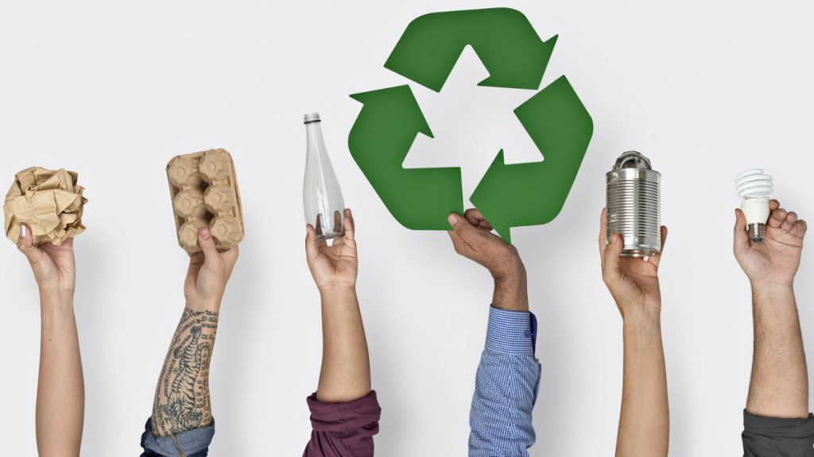
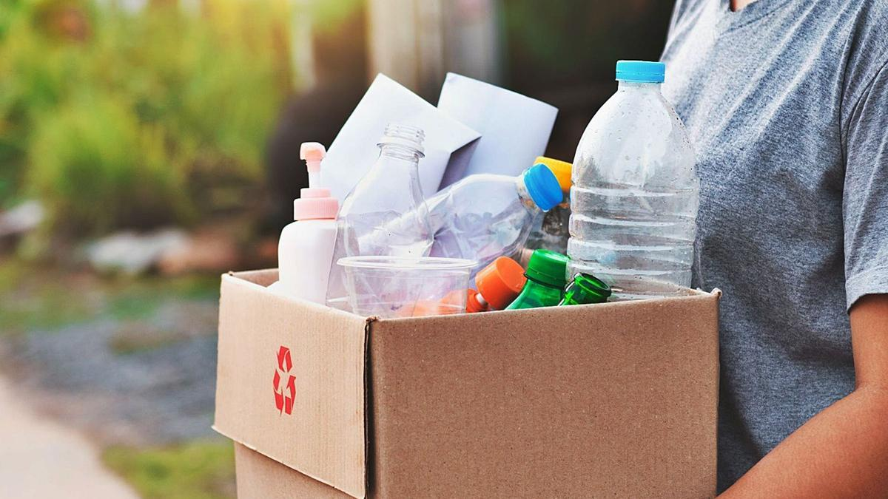
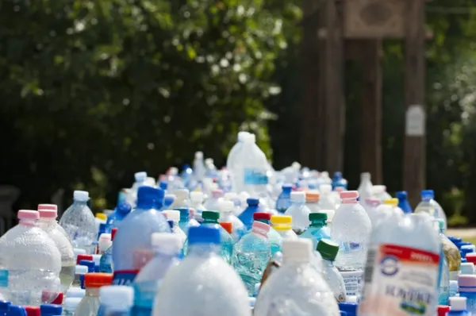
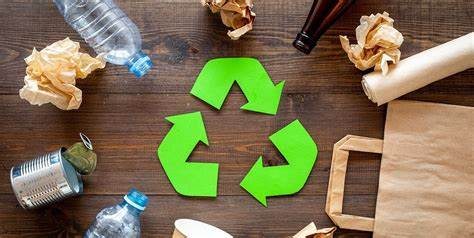
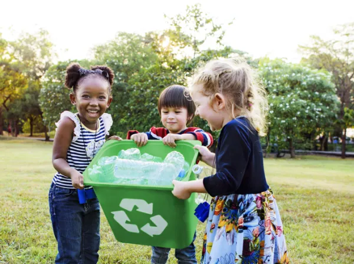

Rediseñar: La clave para un futuro sostenible 🌱
El concepto de Rediseñar dentro de las 7R se centra en la integración de la ecología en el proceso de diseño y fabricación de productos. No se trata solo de crear objetos funcionales, sino de hacerlo de manera que minimicen su impacto ambiental y promuevan la sostenibilidad.
¿Por qué es importante rediseñar?
Las sociedades modernas consumen grandes cantidades de bienes y energía a un ritmo acelerado. Esto genera una enorme cantidad de residuos y contribuye a la sobreexplotación de recursos naturales. Rediseñar busca cambiar este modelo, promoviendo productos y procesos que sean más eficientes y respetuosos con el medio ambiente.

Principios del rediseño ecológico
- Uso de materiales sostenibles: Optar por materiales reciclables, biodegradables o de bajo impacto ambiental.
- Eficiencia energética: Diseñar productos que consuman menos energía durante su fabricación y uso.
- Durabilidad y reparabilidad: Crear objetos que tengan una vida útil prolongada y sean fáciles de reparar.
- Minimización de residuos: Reducir el desperdicio en la producción y facilitar el reciclaje de los productos al final de su vida útil.
- Diseño modular: Permitir que los productos sean actualizables o reutilizables en lugar de ser desechados.
Ejemplos de rediseño en acción
- Envases ecológicos: Empresas han comenzado a utilizar empaques biodegradables o reutilizables para reducir el uso de plásticos.
- Electrodomésticos eficientes: Diseñar aparatos con menor consumo energético y mayor durabilidad.
- Moda sostenible: Ropa fabricada con materiales reciclados o procesos de producción menos contaminantes.
- Arquitectura verde: Edificios diseñados para aprovechar la luz natural, reducir el consumo energético y utilizar materiales reciclados.
Cómo aplicar el rediseño en la vida cotidiana
- Optar por productos con certificaciones ecológicas.
- Reducir el consumo de plásticos y envases desechables.
- Apoyar marcas que promuevan la sostenibilidad.
- Reparar y reutilizar objetos en lugar de desecharlos.
- Elegir electrodomésticos de bajo consumo energético.
Reducir: Menos consumo, más impacto positivo 🌍
La R de Reducir es uno de los pilares fundamentales de la sostenibilidad. Se trata de disminuir la cantidad de productos y energía que consumimos para generar menos residuos y minimizar nuestro impacto ambiental. En un mundo donde el consumo excesivo es la norma, reducir es una acción clave para preservar los recursos naturales y combatir el cambio climático.

¿Por qué es importante reducir?
Las sociedades actuales consumen bienes y energía a un ritmo acelerado, lo que provoca:
- Agotamiento de recursos naturales como agua, minerales y combustibles fósiles.
- Generación masiva de residuos que terminan en vertederos o contaminan el medio ambiente.
- Altas emisiones de CO₂, contribuyendo al calentamiento global.
- Reducir el consumo no solo ayuda al planeta, sino que también beneficia nuestra economía al disminuir gastos innecesarios.
Cómo reducir en la vida cotidiana
1.- Consumo energético eficiente:
- Mantener la calefacción entre 19 ºC - 21 ºC y el aire acondicionado entre 24 ºC - 26 ºC.
- Aprovechar la luz natural para reducir el uso de electricidad.
- Usar bombillas LED y electrodomésticos de bajo consumo.
2.- Menos desperdicio de agua:
- Cerrar el grifo mientras nos cepillamos los dientes o lavamos los platos.
- Instalar reductores de caudal en grifos y duchas.
- Recolectar agua de lluvia para riego.
3.- Consumo responsable:
- Comprar solo lo necesario y evitar productos con empaques excesivos.
- Elegir productos con certificaciones ecológicas.
- Priorizar calidad sobre cantidad para evitar compras innecesarias.
4.- Movilidad sostenible:
- Optar por transporte público, bicicleta o caminar en lugar de usar el coche.
- Compartir viajes para reducir emisiones de CO₂.
- Usar vehículos eléctricos o híbridos cuando sea posible.
Ejemplos de reducción en acción
- Empresas que eliminan plásticos de un solo uso en sus productos.
- Ciudades que promueven el transporte público y la movilidad sostenible.
- Hogares que implementan hábitos de consumo consciente y eficiencia energética.
Reutilizar: Dar una segunda vida a los productos ♻️
La R de Reutilizar es una de las estrategias más efectivas para reducir la generación de residuos y el consumo de recursos naturales. En lugar de desechar objetos después de un solo uso, podemos darles una nueva utilidad, prolongando su vida útil y disminuyendo el impacto ambiental.

¿Por qué es importante reutilizar?
Cada año, millones de toneladas de residuos terminan en vertederos o contaminan el medio ambiente. Al reutilizar, logramos:
- Reducir la contaminación al evitar que productos desechables lleguen a la basura.
- Ahorrar recursos naturales como agua, madera y minerales utilizados en la fabricación de nuevos productos.
- Disminuir el consumo energético al reducir la necesidad de producción industrial.
- Fomentar la creatividad y el ahorro al encontrar nuevas formas de usar objetos en lugar de comprar nuevos.

Ejemplos de reutilización en la vida cotidiana
- Bolsas reutilizables: Sustituir bolsas plásticas por bolsas de tela o materiales reciclados.
- Envases y frascos: Usar botellas de vidrio para almacenar alimentos o convertirlas en decoraciones.
- Ropa y textiles: Transformar prendas viejas en nuevos diseños o utilizarlas como trapos de limpieza.
- Muebles y objetos: Restaurar muebles antiguos en lugar de desecharlos.
- Papel y cartón: Reutilizar hojas impresas como borradores o convertir cajas en organizadores.
Reutilización en la industria y la comunidad
- Empresas han comenzado a fabricar productos con materiales reutilizados, como ropa hecha con plástico reciclado.
- Ciudades han implementado programas de intercambio de objetos usados para fomentar la reutilización.
- Escuelas promueven el uso de materiales reciclados en proyectos educativos.
Cómo fomentar la reutilización
- Comprar productos reutilizables en lugar de desechables.
- Reparar objetos en lugar de reemplazarlos.
- Compartir y donar artículos que ya no necesitas.
- Incentivar la creatividad para encontrar nuevos usos a los productos.
Reparar: Extender la vida útil de los productos ♻️
La R de Reparar es clave para reducir el desperdicio y fomentar un consumo más responsable. En lugar de desechar objetos cuando presentan fallas, podemos arreglarlos para prolongar su uso y evitar la generación innecesaria de residuos.

¿Por qué es importante reparar?
Cada año, millones de productos terminan en la basura simplemente porque no fueron reparados. Esto genera:
- Mayor contaminación por desechos electrónicos y plásticos.
- Desperdicio de recursos naturales utilizados en la fabricación de nuevos productos.
- Gastos innecesarios al reemplazar objetos en lugar de arreglarlos.
- Reparar no solo ayuda al medio ambiente, sino que también ahorra dinero y fomenta habilidades prácticas.

Ejemplos de reparación en la vida cotidiana
- Electrodomésticos: En lugar de comprar uno nuevo, reparar lavadoras, refrigeradores y otros aparatos.
- Ropa y calzado: Coser prendas dañadas, cambiar suelas de zapatos o ajustar tallas.
- Muebles: Restaurar mesas, sillas y armarios en lugar de desecharlos.
- Dispositivos electrónicos: Cambiar baterías, pantallas o componentes en celulares y computadoras.
- Bicicletas y vehículos: Mantener y reparar piezas para evitar compras innecesarias.
Cómo fomentar la cultura de reparación
- Aprender habilidades básicas de reparación en talleres o tutoriales en línea.
- Apoyar negocios locales que ofrecen servicios de reparación.
- Comprar productos diseñados para ser reparables en lugar de desechables.
- Promover el intercambio de herramientas para facilitar arreglos en la comunidad.
Reparación en la industria y la comunidad
- Empresas han comenzado a fabricar productos con piezas reemplazables para facilitar su reparación.
- Ciudades han implementado talleres comunitarios donde las personas pueden aprender a reparar objetos.
- Movimientos globales como el "Right to Repair" buscan garantizar que los consumidores puedan arreglar sus productos sin restricciones.
Renovar: Dar nueva vida a los objetos y espacios 🔄✨
La R de Renovar se enfoca en actualizar y mejorar productos, materiales y espacios para extender su utilidad y reducir el desperdicio. En lugar de desechar objetos antiguos, podemos transformarlos para que sigan siendo funcionales y estéticamente atractivos.

¿Por qué es importante renovar?
Renovar es una alternativa sostenible que ayuda a:
- Reducir la generación de residuos al evitar el descarte innecesario de objetos.
- Ahorrar recursos naturales al reutilizar materiales en lugar de fabricar nuevos.
- Fomentar la creatividad al encontrar nuevas formas de aprovechar productos existentes.
- Disminuir el consumo energético al evitar procesos de producción intensivos.
Ejemplos de renovación en la vida cotidiana
- Muebles restaurados: Pintar, lijar o cambiar piezas para darles un aspecto renovado.
- Ropa transformada: Convertir prendas viejas en nuevos diseños o accesorios.
- Electrodomésticos mejorados: Actualizar componentes para mejorar su eficiencia.
- Espacios renovados: Redecorar habitaciones con materiales reciclados o reutilizados.
- Tecnología reacondicionada: Reparar y actualizar dispositivos electrónicos para prolongar su vida útil.
Cómo fomentar la renovación
- Aprender técnicas de restauración para muebles, ropa y objetos.
- Apoyar negocios que ofrecen productos reacondicionados en lugar de nuevos.
- Utilizar pintura ecológica y materiales reciclados en proyectos de renovación.
- Transformar objetos en lugar de desecharlos, dándoles un nuevo propósito.
Renovación en la industria y la comunidad
- Empresas han comenzado a fabricar productos con materiales renovados, como muebles hechos con madera reciclada.
- Ciudades han implementado programas de renovación urbana para reutilizar estructuras antiguas.
- Movimientos ecológicos promueven la restauración de objetos en lugar de la compra de nuevos.
Recuperar: Reintroducir materiales en el ciclo productivo ♻️
La R de Recuperar se centra en la recuperación de materiales y recursos que han sido utilizados, para reincorporarlos en procesos productivos en lugar de desecharlos. Es una estrategia clave para reducir el impacto ambiental y fomentar una economía circular.

¿Por qué es importante recuperar?
Cada año, toneladas de materiales como metales, plásticos y papel terminan en vertederos cuando podrían ser recuperados y reutilizados. Al recuperar, logramos:
- Reducir la extracción de recursos naturales, como minerales y petróleo.
- Disminuir la contaminación, evitando que materiales tóxicos lleguen al medio ambiente.
- Ahorrar energía, ya que recuperar materiales requiere menos recursos que producir nuevos desde cero.
- Fomentar la economía circular, promoviendo el uso eficiente de los materiales.

Ejemplos de recuperación en la vida cotidiana
- Recuperación de metales: Fundir y reutilizar aluminio, cobre y hierro en nuevos productos.
- Recuperación de plásticos: Transformar plásticos usados en nuevos envases o fibras textiles.
- Recuperación de papel y cartón: Reciclar papel para fabricar nuevos productos sin necesidad de talar árboles.
- Recuperación de agua: Implementar sistemas de filtración y reutilización en hogares e industrias.
- Recuperación de componentes electrónicos: Extraer materiales valiosos de dispositivos electrónicos para su reutilización.
Cómo fomentar la recuperación
- Separar correctamente los residuos para facilitar su recuperación.
- Apoyar empresas que utilizan materiales recuperados en sus productos.
- Promover la educación sobre recuperación de recursos en comunidades y escuelas.
- Implementar sistemas de recuperación en el hogar, como la reutilización de agua de lluvia.
Recuperación en la industria y la comunidad
- Empresas han comenzado a fabricar productos con materiales recuperados, reduciendo su impacto ambiental.
- Ciudades han implementado programas de recuperación de residuos para su reutilización en infraestructura.
- Movimientos ecológicos promueven la recuperación de materiales como alternativa al consumo excesivo.
Reciclar: Transformar residuos en nuevos recursos♻️🌍
La R de Reciclar es una de las estrategias más conocidas dentro de la sostenibilidad. Se trata de convertir materiales usados en nuevos productos, evitando que terminen en vertederos y reduciendo la necesidad de extraer recursos naturales.

¿Por qué es importante reciclar?
Cada año, toneladas de residuos contaminan el medio ambiente. Al reciclar, logramos:
- Reducir la contaminación al evitar que plásticos, metales y otros materiales dañen ecosistemas.
- Ahorrar recursos naturales, como agua, madera y minerales.
- Disminuir el consumo energético, ya que reciclar requiere menos energía que producir materiales desde cero.
- Fomentar la economía circular, promoviendo el uso eficiente de los materiales.

Materiales reciclables y su proceso
- Papel y cartón: Se trituran y procesan para fabricar nuevos productos sin necesidad de talar árboles.
- Plásticos: Se funden y transforman en nuevos envases, fibras textiles o materiales de construcción.
- Vidrio: Se limpia y funde para crear nuevas botellas y recipientes.
- Metales: Se recuperan y reutilizan en la fabricación de herramientas, vehículos y estructuras.
- Residuos orgánicos: Se convierten en compost para fertilizar suelos.
Cómo reciclar correctamente
- Separar los residuos en orgánicos, plásticos, papel, vidrio y metales.
- Lavar los envases antes de reciclarlos para evitar contaminación.
- Identificar los símbolos de reciclaje en productos para saber cómo desecharlos.
- Apoyar productos reciclados para fomentar la demanda de materiales reutilizados.
Reciclaje en la industria y la comunidad
- Empresas han comenzado a fabricar productos con materiales reciclados, reduciendo su impacto ambiental.
- Ciudades han implementado programas de reciclaje para gestionar residuos de manera eficiente.
- Movimientos ecológicos promueven la educación sobre reciclaje y su importancia para el planeta.